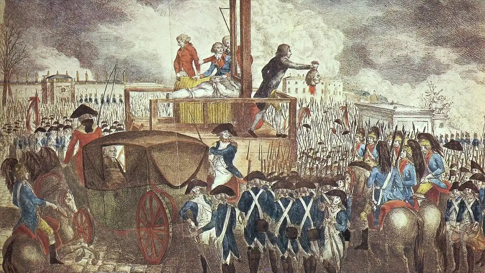
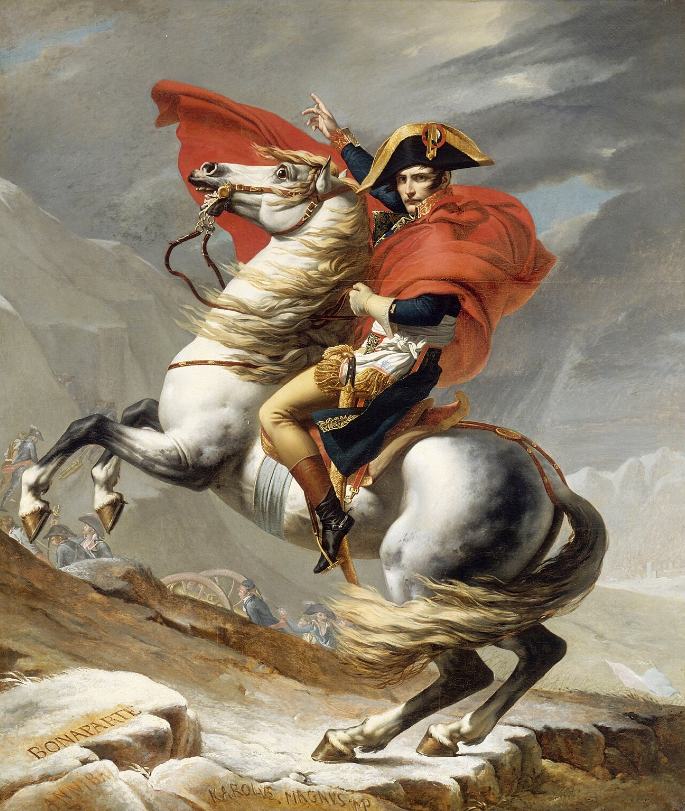

9. 自由的分野，走向不同的革命结果
大家好，我是杨照。
强力政府与个人自由不可得兼？
托克维尔对法国的看法，在一定的程度上左右了他看待美国的方式。我们前面提过，他有另外一部著作，那就是《旧体制与大革命》。在这本书里面，托克维尔指出，法国大革命将两种完全相反，并且其实是彼此矛盾的追求放在一起。法国大革命当中，一方面有一股巨大的力量将法国社会推向个人自由，另外却有一股同样巨大的力量，将法国社会朝集权的方向推动着。
“旧体制”是一个阶级政权，一切先看人的阶级，属于不一样的阶级的人，有完全不一样的社会待遇，甚至有完全不一样的命运。即便是贵族，低阶贵族、没落贵族的待遇，和国王路易十四、路易十六也天差地别。然而和国王天差地别的低阶贵族、没落贵族，他们所过的生活却又已经是一般平民只能够羡慕，不可能能够达到的了。这样的封闭阶级制度，就直接造成了政府的无能。
路易十六的政府无能到连收税都做不到。税收是国王赖以过奢华生活的基础，但国王底下的官员个个都是贵族，以至于连有效率地将税给收进来都不愿意做，都懒得做，所以就发展出外包的“收税人”制度。政府只管订定各种不同区域应该要有多少税收，然后将实际收税的工作委托给收税人，收税人负责交付定额的税收给政府。至于收税人用什么方式收税，实际上又收了多少，政府一概不管、不过问。
可以想见，这些外包收税人他们所用的方式，一定是五花八门，无法无天，而且出于私利，他们一定尽力“极大化”他们收进来的钱。爆发革命的一条重要导火线，就出自于收税人，他们在民间的恶劣形象，还有他们在民间所惹起的汹涌的愤怒。
阶级区分、严苛残酷的收税剥削，像扣住手脚的枷锁，像勒在脖子上的绳索，让人民生不如死。于是很容易，他们就会愿意起而拼命，要自由，要解开枷锁和绳索。这就成了革命必然的诉求。
然而，既然革命源自于荒唐的收税人弊端，源自于政府不可思议的巨大失能，那么在革命热情当中，也就必然还有另外一种渴望，那是期待一个有能力、像样的政府。这份渴望并没有被纳入“自由、平等、博爱”的口号当中，于是很容易会被忽视，但在当时的现实当中，其实和自由、平等、博爱是同等重要的。
革命的冲动、集体情绪激昂当中，人们无法冷静地看出来：自由，尤其是高度的个人自由，和有能力的政府，这两件事情基本上是矛盾的。
有能力的政府，首先必须要创造出一套公共秩序，也就必然要约束个人行为，让个人行为符合集体追求的目标。对集体有利的事，不必然对每一个个人都有利。如果不限制个人自由，也就无从有效地创造集体利益。这是到今天我们都仍然在面对的两难。
到底自由有多重要？个人应该享有多大的自由？另外一部分，对于有能力的政府，我们应该有些什么样的预期，我们应该有些什么样的向往？那你愿意交付多少个人自由来取得一个有能力的政府？如果一个政府没有能力，这个时候你取得了个人的自由，你认为是好还是坏呢？政府应该管多少，而个人应该得到多少的自由，以至于这中间可以得到一份平衡呢？这个平衡，我不知道大家会如何思考。
在现实当中，我们也看到，有非常有能力的政府，但在政府的能力当中，又必然牺牲了许多个人的自由。处在这样的情况底下，你对政府的想象跟预期又如何和你希望得到的个人自由的程度相调和呢？有任何的想法，非常欢迎在留言当中，我们也是一样，可以大家分享不一样的看法、意见、态度、立场，好好地来讨论一下。
继续说到，托克维尔就用这种方式在看待，那就是革命中的人，他们想不到这些；然而如此根本的矛盾，却不会放过这些革命中人。托克维尔他就看出来，这是革命之后血腥大混乱的来源。大家都要自由。没有集体公共秩序，政府就一定做不了事；革命却换来了做不了事的政府，于是大家将必然再度起而推翻政府；推翻了一个无能的政府，又必然再换来另外一个无能的政府。所以就有了法国大革命之后的这样血腥、荒唐的局面：将别人送上断头台的人，后来几乎也都跟着被另外的人送上了断头台。当他们推翻前一个政府的时候，他们是有热情、有能力的革命分子；一旦他们掌有了权力，他们就翻身变成腐化、无能，应该被打倒的人民敌人。

处死路易十六（Execution of King Louis XVI）, Georg Heinrich Sieveking, 1793
用国家集权改写个人自由
法国大革命第一阶段的大混乱，是由拿破仑来收拾的。拿破仑凭什么？凭借着他摆脱了原本的自由承诺。他接续革命的成果，但实际上却改变了革命口号的定义，将“个人自由”改写成为“国家集体自由”。他取消了许多法国人的个人自由，建立了一个集中、专权的政府，还将自己的地位抬高成为皇帝。

系列油画《跨越阿尔卑斯山圣伯纳隘口的拿破仑》（Bonaparte franchissant le Grand-Saint-Bernard），由法国画家雅克-路易·大卫于1801-1805年创作，上图为法国巴黎凡尔赛宫中收藏的版本之一。图源网络。
拿破仑是一个不折不扣的集权者，一路成功地将各种权力集中到自己的手里。他手中多一份权力，法国人民就少一份自由，而他用来收拢权力、取消个人自由的工具，是法兰西国家主义，是军事胜利的荣光。也就是说，用法国在国际间上升的地位，相对于欧洲其他国家获得的行动自由，也就是国家的自由、集体的自由，来换取法国国民放弃原本革命所许诺的另外的那种自由，那是个人的自由。
还有一个因素：拿破仑的出身背景。从出身背景看，我们几乎找不到一个比拿破仑更没有资格担任法国领袖的人了。出生于科西嘉岛，虽然父母有贵族血统，但抱歉，那是意大利的贵族血统，不是法国的。拿破仑到法国本土上军事学校的时候，甚至不太会说法语。他所受的是炮兵的训练，但因为他的身材，因为他的动作，他在部队里还经常被嘲笑。这样的人，怎么可能变成法国领袖呢？
但拿破仑升上来了，因为他不是活在革命前的旧体制下，而是活在革命之后，人民摆脱了阶级枷锁，获得了Liberté（自由），这样的一个新的社会里。拿破仑不可思议的成功，于是就成了革命“自由”的具体象征。人们看到拿破仑，看到的不是一般的另外一个君主，不是另外一个高高在上的权力者。那是什么？那是一个出身背景跟大家一样，甚至比大家还糟的小子，靠着Liberté，靠着“自由”，一路创造了自己。
拿破仑以自由的化身取得大众信任，取得了收拾局面的权力。他的权力大到他就只能够登基去当皇帝。当了皇帝，他就能够一直握有这些权力，不需要交出去，也不需要去考虑应该要交给谁。事实是，在那样的情况底下，并不存在任何让他可以托付权力、分散权力的制度或者是机构，他要交也交不出去啊。
拿破仑暂时解决了个人自由和强大政府这两种矛盾追求的问题。但这种解决也就只能够建立在拿破仑不断地打胜仗，法国不断对外扩张的前提下。果然，当拿破仑带领的法国扩张受到了挫折，那根本的矛盾就在法国重新浮上来了。拿破仑垮台之后，法国又陷入同样的混乱当中。
这就是托克维尔重要的观点：要自由，又要集权，这项矛盾就使得法国大革命注定无法成功。即使是经历了拿破仑轰轰烈烈的努力，失败的宿命依然阴魂不散，只是让革命的失败更加醒目，更加spectacular。
两种自由的不同走向
法国大革命注定失败，那么几乎同时发生，也经常被拿来相提并论的美国革命呢？为什么美国革命就成功了呢？美国革命的起源，不也是北美殖民地人无法忍受英国母国的不平等待遇，追求从英国解放出来，换句话说，这不也是一场追求自由的革命吗？为什么会得到和法国大革命完全不同的结果？
托克维尔面对这个问题，他的方式是用两种Liberté（自由）的分野来回答。“自由”有两种，一种是natural liberty，自然的自由；另外一种是civil liberty，市民的自由，或者说作为一个公民的自由。
法国大革命会出现这么大的矛盾跟冲突，因为法国人将口号当中的“自由”理解为“自然的自由”，也就是说不受拘束，我高兴怎么样就怎么样的自由。他们认为，革命之前的社会有这么多不合理的限制和压迫，革命打破了这些限制和压迫，那大家就可以随心所欲了。
然而，托克维尔强调：美国是一个自由的国家，但美国人在自己的国家里享有的自由绝对不是自然的自由。从一开始，美国革命要向英国人争取的，那就是civil liberty，市民的、公民的自由。
美国革命的导火线，和法国一样，是收税问题。不过我们看看，美国人的口号是什么？“没有代表就不能抽税！”他们要争取的，是在英国国会得到代表席次，透过合法的代表制来订定殖民地的税法；不能够在没有代表的情况底下，由英国人片面地决定殖民地应该如何纳税。
说得更明白一些，美国革命的起源，是殖民地人民要求拥有和母国英国公民同样的权利。再说一次，关键在于，英国公民的权利。他们要有不被任意操纵、摆弄、任意侵犯财产的基本自由。这种自由是civil liberty，是属于公民的自由，也是在特定权利领域当中的自由，并不是法国人他们概念当中全面的、普遍的、没有特定定义的自由。
那么，再后退一步追究，为什么美国人会追求有限的civil liberty，而不像法国人那样要求natural liberty？“自然自由”之所以被称之为natural，不正就是因为那比较容易理解，人比较自然就能够想到的一种自由吗？
关于这个问题，托克维尔引用了一段美国革命时期传教士的文章，里面说：“我们向英国要求什么样的自由？如同耶稣基督给予我们的自由。”出现了耶稣基督，我们就知道，这一定又要牵涉到美国特殊的清教传统了。
那很有意思，什么是“耶稣基督给予我们的自由”？这话该如何解释呢？
还是必须要放进到清教徒（puritans）的传统当中，才能够充分地、准确地理解。清教徒相信：耶稣基督将我们从原来的枷锁上解放下来，他给我们一种特殊的自由。那自由当然不是让你高兴做什么就做什么，高兴去吃禁果、去堕落，就让你去吃禁果堕落。耶稣基督给予人自由，因为他在救赎的这件事情上为我们开出了一条过去不存在的路。在耶稣基督降临之前，犯了原罪、被从伊甸园里赶出来的人和上帝断绝了关系，也就没有了救赎的希望。耶稣基督他却无罪受难，他根本没有原罪，他不是我们一般的人，他是彻底的无罪受难，因此重新给了人救赎的机会。
耶稣基督提供的自由是什么样的自由？如果要确确实实地来说的话，那就是：给了人可以悔改，可以追求救赎的自由。这样的自由，依照基督教神学的解释，在耶稣基督降临之前，是不存在的。
人要如何利用这份自由？和一般概念下可以为所欲为的自由彻底相反，这是一种对抗诱惑、避开邪淫、清心悔罪的自由，选择克制、取消生活上的诸多享受，可以自由自主地选择朝向救赎的道路。
美国人的自由，和这样的宗教自由关系密切，相对地，也就远离了纵欲放荡的自由。
清教道德下的“自由”
法国大革命是一个真正的“大革命”，因为革命对象如此全面、如此彻底。革命之前的社会道德，也是革命要革除的对象，这套社会道德具有高度的阶级性、限制性、封闭性，当然不可能符合革命精神。既有道德随着皇权一并被革除，没有了道德规范的社会当然很容易助长“自然自由”（natural liberty）。
美国的独立战争，虽然也被称之为“革命”，不过它的性质、它的幅度无法和法国大革命相提并论。向英国要求政治自由的时候，北美殖民地，尤其是新英格兰（New England）地区，已经建立起了一套以宗教为基础的社会道德，他们非但没有要推翻这套社会道德，而且是要以这套社会道德来凝聚革命力量，来对抗英国。
托克维尔在书里面引用了许多文章，让读者可以明了，那个时代的北美殖民地，清教徒订定了许多非常严厉的法律，来管理他们的社会。托克维尔明白地说：“从来没看过人类订的法律当中有这么多死刑的。”通奸，死刑；渎神，讲冒犯上帝的话，死刑；做破坏伦常的事，死刑……从来没有一个群体对自己如此严苛。这种规范比较像是主人订定来管理、来威吓仆人或者是奴隶的吧！这真的是清教徒的自我规范，一点点错就给予那么严厉的惩罚。
所以清教徒群体当中常常有人被处死了？不是的，这是一个最多死刑的社会，却也是最少有人被判死刑的社会。法律会订得那么严，因为这个群体的人，他们已经内化了强烈的自我纪律。那些我们认为的小事，在他们的自我纪律当中已经非常严重，严重到他们几乎不会犯的错误。倒过来看，如此严厉的法律，也就一定会具体提醒这个群体里的人，让他们更加谨慎，更加自律，不会随便犯规。
所以，北美的清教徒是同质性很高的群体，对于“人之所以为人”“我们为什么这样活着”的这些根本的问题，这些人他们有着很类似的答案，而且他们的答案以信仰的形式根植在内心，不会轻易动摇。也就是，他们内心已经有明确的道德意识，每一个人总要遵从内在的道德指令，那些内在指令比外在的戒令、法条，事实上都还要更加严格。
托克维尔就特别点出，这是难得而且重要的基础条件，使得美国人不会落入个人伸张“自然自由”（natural liberty）的时候所产生的混乱。
不过当然，我们可以做历史的精细对照，我们就可以了解，如果美国的民主背后，在背景上是依赖这样清教徒的高度自我节制，这样的一种社会内在的个人自我节制，一旦随着时间而松懈甚至瓦解了，那本来的civil liberty会怎么样朝向natural liberty的方向去倾斜、去改变，甚至更进一步地，就终极改变了美国的民主制度、美国的民主精神吗？
这是一个大问题，但这也是沿着托克维尔给我们的解释，我们对于当下现在的美国社会、美国民主，我们可以深入观察、分析、讨论的重要议题。
感谢您的收听，我们下次再会。